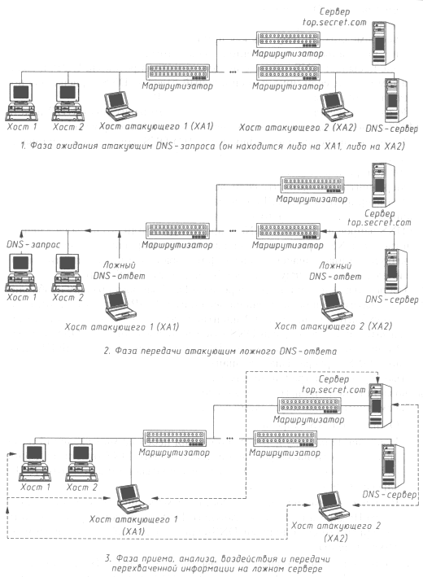
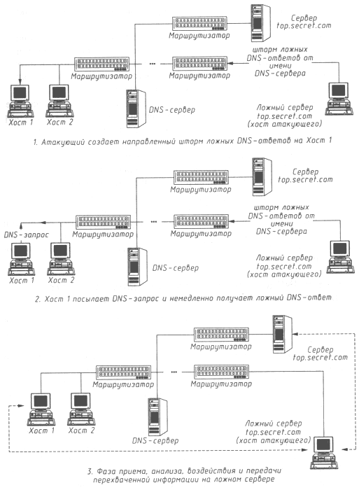
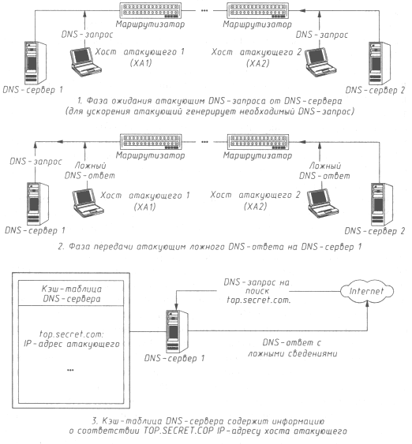
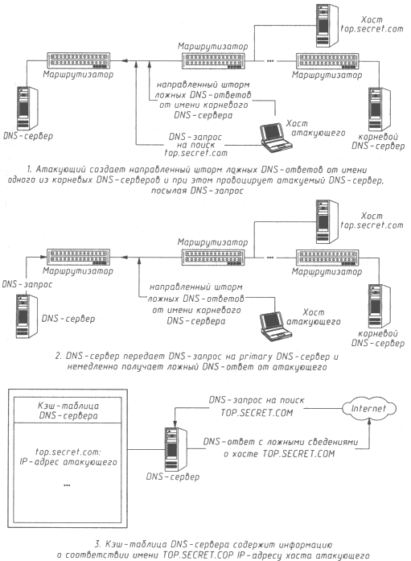

АТАКА НА INTERNET
Как известно, для обращения к хостам в Internet используются 32-разрядные IP-адреса, уникально идентифицирующие каждый сетевой компьютер в этой глобальной сети. Однако для пользователей применение IP-адресов при обращении к хостам является не слишком удобным и далеко не самым наглядным способом взаимодействия.
На самом раннем этапе развития Internet именно для удобства пользователей было принято решение присвоить всем компьютерам в Сети имена. Использование имен помогает лучше ориентироваться в киберпространстве Internet: запомнить, например, имя www.ferrari.it пользователю куда проще, чем четырехразрядную цепочку IP-адреса. Употребление в Internet мнемонически удобных и понятных пользователям имен породило проблему преобразования имен в IP-адреса. Такое преобразование необходимо, так как на сетевом уровне адресация пакетов идет не по именам, а по IP-адресам, следовательно, для непосредственной адресации сообщений в Internet имена не годятся. Сначала, когда в сеть Internet было объединено небольшое количество компьютеров, NIC (Network Information Center) для решения проблемы преобразования имен в адреса создал специальный файл (hosts file), в который вносились имена и соответствующие им IP-адреса всех хостов в Сети. Этот файл регулярно обновлялся и распространялся по всей Сети. Но, по мере развития Internet, число объединенных в Сеть хостов увеличивалось и такая схема становилась все менее и менее работоспособной. На смену ей пришла новая система преобразования имен, позволяющая пользователю получить необходимые сведения о соответствии имен и IP-адресов от ближайшего информационно-поискового сервера (DNS-сервера). Этот способ решения проблемы получил название Domain Name System (DNS - доменная система имен).
Чтобы реализовать эту систему, был разработан сетевой протокол DNS, для обеспечения эффективной работы которого в Сети создаются специальные выделенные информационно-поисковые серверы - DNS-серверы.
Поясним основную задачу, решаемую службой DNS. В современной сети Internet хост (имеется в виду клиентская часть DNS, называемая resolver) при обращении к удаленному серверу обычно знает его имя, но не IP-адрес, который необходим для непосредственной адресации. Следовательно, перед хостом возникает стандартная задача удаленного поиска: по имени удаленного хоста найти его IP-адрес. Решением этой задачи и занимается служба DNS на базе протокола DNS.
| Запросы, генерируемые хостом, являются рекурсивными, то есть в качестве ответа на такой запрос возвращается либо искомая информация, либо сообщение о ее отсутствии. Запросы, генерируемые DNS-cepвером, являются итеративными (нерекурсивными) и, в отличие от рекурсивных, допускают ответ в виде ссылки на другой сервер, который лучше осведомлен о месте расположения искомой информации. |
Рассмотрим DNS-алгоритм удаленного поиска IP-адреса по имени в сети Internet.
- Хост посылает на IP-адрес ближайшего DNS-сервера (он устанавливается при настройке сетевой ОС) DNS-запрос, в котором указывает имя сервера, IP-адрес которого необходимо найти.
- DNS-сервер, получив такое сообщение, ищет в своей базе имен указанное имя. Если указанное в запросе имя найдено, а следовательно, найден и соответствующий ему IP-адрес, то DNS-сервер отправляет на хост DNS-ответ, в котором указывает искомый IP-адрес. Если же DNS-сервер не обнаружил такого имени в своей базе имен, то он пересылает DNS-запрос на один из ответственных за домены верхнего уровня DNS-серверов, адреса которых содержатся в файле настроек DNS-сервера root.cache, и описанная в этом пункте процедура повторяется, пока имя не будет найдено (или будет не найдено).
Анализируя уязвимость этой схемы удаленного поиска, можно прийти к выводу, что в сети, использующей протокол DNS, возможно осуществление типовой удаленной атаки "ложный объект РВС". Практические изыскания и критический анализ безопасности службы DNS позволяют предложить три возможных варианта удаленной атаки на эту службу.
Перехват DNS-запроса
Внедрение в сеть Internet ложного DNS-сервера путем перехвата DNS-запроса - это удаленная атака на базе типовой атаки, связанной с ожиданием поискового DNS-запроса. Перед тем как рассмотреть алгоритм атаки на службу DNS, необходимо обратить внимание на некоторые тонкости в работе этой службы.
Во-первых, по умолчанию служба DNS функционирует на базе протокола UDP (хотя возможно и использование протокола TCP), что, естественно, делает ее менее защищенной, так как протокол UDP (в отличие от TCP) вообще не предусматривает средств идентификации сообщений. Для того чтобы перейти от UDP к TCP, администратору DNS-сервера придется очень серьезно изучить документацию (в стандартной документации на демон named в ОС Linux нет никакого упоминания о возможном выборе протокола, на котором будет работать DNS-сервер). Этот переход несколько замедлит систему, так как при использовании TCP требуется создание виртуального соединения, кроме того, конечная сетевая ОС вначале посылает DNS-запрос с использованием протокола UDP, и только в том случае, если придет специальный ответ от DNS-сервера, она пошлет следующий запрос с использованием TCP.
Во-вторых, начальное значение поля "порт отправителя" в UDP-пакете >= 1023 и увеличивается с каждым переданным DNS-запросом.
В-третьих, значение идентификатора (ID) DNS-запроса устанавливается следующим образом. В случае передачи DNS-запроса с хоста оно зависит от конкретного сетевого приложения, вырабатывающего DNS-запрос. Эксперименты показали, что если запрос посылается из оболочки командного интерпретатора (SHELL) операционных систем Linux и Windows 95 (например, ftp nic.funet.fi), то это значение всегда равняется единице. Если же DNS-запрос передается из Netscape Navigator или его посылает непосредственно DNS-сервер, то с каждым новым запросом сам браузер или сервер увеличивает значение идентификатора на единицу. Все эти тонкости имеют значение в случае атаки без перехвата DNS-запроса.
Для реализации атаки путем перехвата DNS-запроса кракеру необходимо перехватить запрос, извлечь из него номер UDP-порта хоста отправителя, двухбайтовое значение ID-идентификатора DNS-запроса и искомое имя, а затем послать ложный DNS-ответ на извлеченный из DNS-запроса UDP-порт, где в качестве искомого IP-адреса указать настоящий IP-адрес ложного DNS-сервера. Такой вариант атаки в дальнейшем позволит полностью перехватить трафик между атакуемым хостом и сервером и активно воздействовать на него по схеме "ложный объект РВС".
Рассмотрим обобщенную схему работы ложного DNS-сервера (рис. 4.5):
- Ожидание DNS-запроса.
- Извлечение из полученного сообщения необходимых сведений и передача по сети на запросивший хост ложного DNS-ответа от имени (с IP-адреса) настоящего DNS-сервера с указанием в этом ответе IP-адреса ложного DNS-сервера.
- В случае получения пакета от хоста - изменение в IP-заголовке пакета его IP-адреса на IP-адрес ложного DNS-сервера и передача пакета на сервер (то есть ложный DNS-сервер ведет работу с сервером от своего имени).
- В случае получения пакета от сервера - изменение в IP-заголовке пакета его IP-адреса на IP-адрес ложного DNS-сервера и передача пакета на хост (для хоста ложный DNS-сервер и есть настоящий сервер).

Рис. 4.5. Функциональная схема ложного DNS-сервера
Необходимым условием осуществления данного варианта атаки является перехват DNS-запроса, а это возможно только в том случае, если атакующий находится либо на пути основного трафика, либо в одном сегменте с DNS-сервером. В результате подобная удаленная атака становится трудноосуществимой на практике (попасть в сегмент DNS-сервера, и тем более в межсегментный канал связи, взломщику, скорее всего, не удастся). Однако при выполнении этих условий можно осуществить межсегментную удаленную атаку на сеть Internet.
Отметим, что практическая реализация данной удаленной атаки выявила ряд интересных особенностей в работе протокола FTP и в механизме идентификации TCP-пакетов (см. раздел "Подмена одного из субъектов TCP-соединения в сети Internet"). В случае, когда FTP-клиент на хосте подключался к удаленному FTP-серверу через ложный DNS-сервер, оказывалось, что каждый раз после выдачи пользователем прикладной команды FTP (например, ls, get, put и т.д.) FTP-клиент вырабатывал команду PORT, которая состояла в передаче на FTP-сервер в поле данных TCP-пакета номера порта и IP-адреса клиентского хоста (особый смысл в этих действиях трудно найти: зачем каждый раз передавать на FTP-сервер IP-адрес клиента?). Если на ложном DNS-сервере не изменить в поле данных IP-адрес и переслать пакет на FTP-сервер по обыкновенной схеме, то следующий пакет будет передан FTP-сервером на хост FTP-клиента, минуя ложный DNS-сервер. Что самое интересное, такой пакет будет воспринят как нормальный, и в дальнейшем ложный DNS-сервер потеряет контроль над трафиком между FTP-сервером и FTP-клиснтом. Это связано с тем, что обычный FTP-сервер не предусматривает никакой дополнительной идентификации FTP-клиента, а перекладывает все проблемы идентификации пакетов и соединений на более низкий уровень - уровень TCP (транспортный).
Направленный шторм ложных DNS-ответов на атакуемый хост
Другой вариант осуществления удаленной атаки - внедрение в сеть Internet ложного сервера путем создания направленного шторма ложных DNS-ответов на атакуемый хост - основан на второй разновидности типовой атаки "ложный объект РВС" (при использовании недостатков алгоритмов удаленного поиска). В этом случае кракер осуществляет постоянную передачу на атакуемый хост заранее подготовленного ложного DNS-ответа от имени настоящего DNS-сервера без приема DNS-запроса. Другими словами, атакующий создает в сети Internet направленный шторм ложных DNS-ответов. Это возможно, так как обычно для передачи DNS-запроса используется протокол UDP, в котором отсутствуют средства идентификации пакетов. Сетевая ОС хоста предъявляет следующие требования к полученному от DNS-сервера ответу: IP-адрес отправителя ответа должен совпадать с IP-адресом DNS-сервера, а имя в DNS-ответе - с именем в DNS-запросе; кроме того, DNS-ответ следует направить на тот же UDP-порт, с которого было послано сообщение (в данном случае это первая проблема для взломщика), и поле идентификатора запроса (ID) в заголовке DNS-ответа должно содержать то же значение, что и в переданном запросе (а это вторая проблема).
Так как атакующий не имеет возможности перехватить DNS-запрос, основную проблему для него представляет номер UDP-порта, с которого этот запрос был послан. Однако, как было отмечено ранее, номер порта отправителя принимает ограниченный набор значений (>= 1023), поэтому атакующему достаточно действовать простым перебором, направляя ложные ответы на соответствующий перечень портов. На первый взгляд, второй проблемой может стать двухбайтовый идентификатор DNS-запроса, но он либо равен единице, либо, в случае DNS-запроса, например от Netscape Navigator, имеет значение близкое к нулю (один запрос - ID увеличивается на 1).
Поэтому для осуществления данной удаленной атаки взломщику необходимо выбрать интересующий его объект (например, сервер top.secret.com). маршрут к которому требуется изменить так, чтобы он проходил через ложный сервер - хост кракера. Это достигается постоянной передачей (направленным штормом) ложных DNS-ответов на соответствующие UDP-порты атакуемого объекта. В этих ложных DNS-ответах в качестве IP-адреса хоста top.secret.com указывается IP-адрес атакующего. Далее атака развивается по следующей схеме. Как только атакуемый обратится по имени к хосту top.secret.com, то от данного хоста в сеть будет передан DNS-запрос, который атакующий никогда не получит. Однако кракеру этого и не требуется, так как на объект атаки сразу же поступит постоянно передаваемый ложный DNS-ответ, что и будет воспринято ОС атакуемого хоста как настоящий ответ от DNS-сервера. Все! Атака состоялась, и теперь жертва будет передавать все пакеты, предназначенные для top.secret.com, на IP-адрес хоста взломщика, который, в свою очередь, будет переправлять их на top.secret.com, воздействуя на перехваченную информацию по схеме "ложный объект РВС".
| Конечно, условием успеха этой атаки будет получение объектом атаки ложного DNS-ответа ранее настоящего ответа от ближайшего DNS-сервера. Поэтому для повышения вероятности ее успеха желательно нарушить работоспособность ближайшего DNS-сервера (например, путем создания направленного шторма UDP-запросов на 53-й порт). |

Рис. 4.6. Внедрение в Internet ложного сервера путем создания направленного шторма ложных DNS-ответов на атакуемый хост
Рассмотрим функциональную схему предложенной удаленной атаки на службу DNS (рис. 4.6):
- Постоянная передача кракером ложных DNS-ответов на различные UDP-порты атакуемого хоста и, возможно, с различными ID от имени (с IP-адреса) настоящего DNS-сервера с указанием имени интересующего хоста и его ложного IP-адреса, которым будет являться IP-адрес ложного сервера - хоста атакующего.
- В случае получения пакета от хоста - изменение в IP-заголовке пакета его IP-адреса на IP-адрес атакующего и передача пакета на сервер (то есть ложный сервер ведет работу с сервером от своего имени - со своего IP-адреса).
- В случае получения пакета от сервера - изменение в IP-заголовке пакета его IP-адреса на IP-адрес ложного сервера и передача пакета на хост (для хоста ложный сервер и есть настоящий сервер).
Таким образом, реализация данной удаленной атаки, использующей пробелы в безопасности службы DNS, позволяет из любой точки сети Internet нарушить маршрутизацию между двумя заданными объектами (хостами). Такая атака осуществляется межсегментно по отношению к цели атаки и угрожает безопасности любого хоста Internet, использующего обычную службу DNS.
Перехват DNS-запроса или создание направленного шторма ложных DNS-ответов на DNS-сервер
Рассмотрим внедрение в сеть Internet ложного сервера путем перехвата DNS-запроса или создания направленного шторма ложных DNS-ответов на атакуемый DNS-сервер.
Из рассмотренной ранее схемы удаленного DNS-поиска следует, что если DNS-сервер не обнаружил указанное в запросе имя в своей базе имен, то такой запрос отсылается им на один из ответственных за домены верхних уровней DNS-серверов, адреса которых содержатся в файле настроек сервера root.cache.
Итак, если DNS-сервер не имеет сведений о запрашиваемом хосте, то он сам, пересылая запрос далее, является инициатором удаленного DNS-поиска. Поэтому ничто не мешает кракеру, действуя описанными в предыдущих пунктах методами, перенести свой удар непосредственно на DNS-сервер. В таком случае ложные DNS-ответы будут направляться атакующим от имени корневого DNS-сервера на атакуемый DNS-сервер.
При этом важно учитывать следующую особенность работы DNS-сервера. Для ускорения работы каждый DNS-сервер кэширует в области памяти свою DNS-таблицу соответствия имен и IP-адресов хостов. В том числе в кэш заносится динамически изменяемая информация об именах и IР-адpecax хостов, найденных в процессе функционирования DNS-сервера, то есть, если DNS-сервер, приняв запрос, не находит у себя в кэш-таблице соответствующей записи, он пересылает запрос на следующий сервер и, получив ответ, заносит найденные сведения в кэш-таблицу. Таким образом, при получении следующего запроса DNS-серверу уже не требуется вести удаленный поиск, так как необходимые сведения находятся у него в кэш-таблице.
Анализ подробно описанной здесь схемы удаленного DNS-поиска показывает, что если на запрос от DNS-сервера атакующий направит ложный DNS-ответ или (в случае шторма ложных ответов) будет вести их постоянную передачу, то в кэш-таблице сервера появится соответствующая запись с ложными сведениями, и в дальнейшем все хосты, обратившиеся к данному DNS-серверу, будут дезинформированы, а при адресации к хосту, маршрут к которому кракер решил изменить, связь с ним будет осуществляться через хост атакующего по схеме "ложный объект РВС". И, что хуже всего, с течением времени эта ложная информация, попавшая в кэш DNS-сервера, начнет распространяться на соседние DNS-серверы высших уровней, а следовательно, все больше хостов в Internet будут дезинформи-рованы и атакованы.
Очевидно, что в том случае, когда взломщик не может перехватить DNS-запрос от DNS-сервера, для реализации атаки ему необходим шторм ложных dns-ответов, направленный на DNS-сервер. При этом возникает следующая проблема, отличная от проблемы подбора портов в случае атаки на хост. Как уже отмечалось, DNS-сервер, посылая запрос на другой DNS-сервер, идентифицирует этот запрос двухбайтовым значением (ID). Это значение увеличивается на единицу с каждым передаваемым запросом. Атакующему узнать текущее значение идентификатора DNS-запроса не представляется возможным. Поэтому предложить что-либо, кроме перебора 216 вероятных значений ID, сложно. Зато исчезает проблема перебора портов, так как все DNS-запросы передаются DNS-сервером на порт 53.
Еще одно условие осуществления атаки на DNS-сервер с использованием направленного шторма ложных dns-ответов состоит в том, что она будет иметь успех только в случае, если DNS-сервер пошлет запрос на поиск имени, которое содержится в ложном DNS-ответе. DNS-сервер посылает этот столь необходимый и желанный для атакующего запрос лишь тогда, когда на пего приходит DNS-запрос от какого-либо хоста на поиск данного имени и этого имени не оказывается в кэш-таблице DNS-сервера. Такой запрос может появиться когда угодно, и кракеру придется ждать результатов атаки неопределенное время. Однако ничто не мешает атакующему, никого не дожидаясь, самому послать на атакуемый DNS-сервер подобный DNS-запрос и спровоцировать DNS-сервер на поиск указанного в запросе имени. Тогда эта атака с большой вероятностью будет иметь успех практически сразу же после начала ее осуществления.

Рис. 4.7. Внедрение в Internet ложного сервера путем перехвата DNS-запроса от DNS-сервера

Рис. 4.8. Внедрение в Internet ложного сервера путем создания направленного шторма ложных DNS-ответов на атакуемый DNS-сервер
Вспомним, например, скандал, произошедший 28 октября 1996 года вокруг одного из московских провайдеров Internet - компании РОСНЕТ, когда пользователи данного провайдера при обращении к обычному информационному WWW-серверу попадали, как было сказано в телевизионном репортаже, "на WWW-сервер сомнительного содержания". Этот инцидент вполне укладывается в только что описанную схему удаленной атаки на DNS-сервер. С одним исключением: вместо адреса хоста атакующего в кэш-таблицу DNS-сервера был занесен IP-адрес другого, не принадлежащего взломщику, хоста (порносайта).
Уже затем нам довелось ознакомиться с интервью, которое якобы дал кракер, осуществивший этот взлом. Из интервью следовало, что атака использовала некую известную "дыру" в WWW-сервере РОСНЕТ, что и позволило атакующему подменить одну ссылку другой. Осуществление воздействий такого типа является, по сути, тривиальным и не требует от взломщика практически никакой квалификации, за исключением изрядной доли усидчивости и навыков в применении известных технологий (подчеркнем: именно осуществление, а не нахождение этой "дыры"). По нашему глубокому убеждению, тот, кто найдет уязвимость, и тот, кто осуществит на ее базе взлом, скорее всего, будут разными лицами, так как обычно специалист, обнаруживший "дыру", не интересуется вопросами практического применения полученных знаний. (Р.Т. Моррис не стал исключением, просто его червь из-за ошибки в коде вышел из-под контроля, и пользователям Сети был нанесен определенный ущерб.)
В завершение хотелось бы снова вернуться к службе DNS и сказать, что, как следует из вышеизложенного, использование в сети Internet службы удаленного поиска DNS позволяет атакующему организовать удаленную атаку на любой хост, пользующийся услугами данной службы, и может пробить серьезную брешь в безопасности этой, и так отнюдь не безопасной, глобальной сети. Как указывал С. М. Белловин (S. М. Bellovin) в ставшей почти классической работе [14]: "A combined attack on the domain system and the routing mechanisms can be catastrophic" ("Комбинированная атака на доменную систему и механизмы маршрутизации может привести к катастрофическим последствиям").
| « | » |